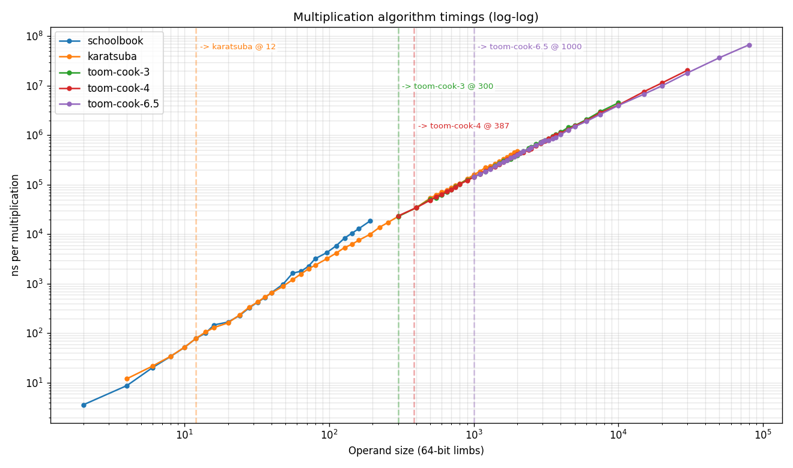

Benchmarks
This page collects the performance measurements for beman::big_int, together
with the methodology behind them. There are two complementary stories:
-
Small-value optimization compares
big_intagainst the native builtin integer types on the four basic operations, showing that small values are handled without heap allocation. -
Large integers compares
big_intagainst the two established arbitrary-precision libraries, Boost.Multiprecision’scpp_intand GMP (gmp_int), at operand sizes from thousands to millions of digits, and explains the algorithm tiers that get it there.
The two suites were measured on different machines and build configurations, so do not compare a number from one against a number from the other; each table is internally consistent and notes its own environment.
Small-value optimization: big_int vs the builtin integer types
A basic_big_int<N> keeps an inplace buffer of ceil(N / 64) limbs, and as long
as a value’s magnitude fits there it is stored directly inside the object with
no heap allocation (see the type
design). The default big_int is basic_big_int<64>, so a single 64-bit limb
lives inplace; basic_big_int<128> keeps two. This suite quantifies that
optimization by timing +, -, *, and / for big_int next to the native
builtin integer types, using Google
Benchmark for the measurement loop. It is built from
small_value_optimization.gbench.cpp.
Three tiers are measured for every operation:
-
64-bit tier —
std::int64_tagainst the defaultbig_int(basic_big_int<64>, one inplace limb). Operands are sized so the result stays within 64 bits, sobig_intnever leaves inplace storage. -
128-bit tier — compares
int128withbasic_big_int<128>(two inplace limbs), the natural same-width counterpart. Built only whereint128exists. -
Large (heap) contrast — the same
big_intoperations on multi-limb, heap-allocated operands (roughly 2^320 and 2^256), to show the cost once a value outgrows the inplace buffer and the optimization no longer applies.
Building and running
Google Benchmark is pulled in with CMake FetchContent (just like GoogleTest),
gated behind the BEMAN_BIG_INT_BUILD_BENCHMARKS option. It is off by default and
only meaningful in a release build, so dedicated release presets enable it:
# Pick the preset for your platform: gcc-release-benchmarks,
# llvm-release-benchmarks, appleclang-release-benchmarks, msvc-release-benchmarks.
cmake --preset appleclang-release-benchmarks
cmake --build --preset appleclang-release-benchmarks \
--target beman.big_int.benchmarks.small_value_optimization
./build/appleclang-release-benchmarks/tests/beman/big_int/perf/beman.big_int.benchmarks.small_value_optimizationEquivalently, add -DBEMAN_BIG_INT_BUILD_BENCHMARKS=ON to any release preset. The
executable accepts the usual Google Benchmark flags, for example
--benchmark_repetitions=7, --benchmark_filter=multiply, or
--benchmark_min_time=0.2s.
Results
Representative medians in nanoseconds per operation, measured on Apple
silicon with AppleClang and a RelWithDebInfo build. Absolute numbers are
machine-dependent.
|
| Operation | std::int64_t |
big_int (1 limb) |
__int128 |
basic_big_int<128> (2 limbs) |
big_int (multi-limb, heap) |
|---|---|---|---|---|---|
|
0.23 |
3.8 |
0.25 |
3.4 |
15.7 |
|
0.23 |
4.2 |
0.24 |
3.9 |
16.1 |
|
0.23 |
1.7 |
0.37 |
5.0 |
30.1 |
|
0.46 |
6.2 |
3.2 |
11.6 |
49.8 |
How to read this:
-
The small-value optimization is the gap between the small-
big_intcolumns and the heap column. A one- or two-limbbig_intoperation costs a few nanoseconds and allocates nothing, while the same operation on a multi-limb operand is roughly 4x—10x slower because every result is heap-allocated. Keeping small values inplace is what closes that gap. -
The builtin columns land at a few tenths of a nanosecond because the operation itself is nearly free and the timing is dominated by a fixed
DoNotOptimizefence that stops the compiler from hoisting or deleting the work. That fence is identical in every cell, so read the table across a row (relative cost) rather than as the absolute cost of a single instruction. -
Even against the builtins the small-value path stays within a small constant factor, and for division the two-limb path of
big_int(11.6 ns) is in the same ballpark as the native__int128divide (3.2 ns), which is itself a library call rather than a single instruction.
Large integers: big_int vs Boost.Multiprecision and GMP
At large operand sizes the relevant comparison is against the established
arbitrary-precision libraries: Boost.Multiprecision’s cpp_int and
GMP (wrapped by Boost as gmp_int). GMP is hand-coded
assembly in its hot paths and is the industry standard for performance, so it is
the natural baseline.
The multiplication and division comparison tables below were measured on an
x86-64 machine with the SIMD multiplication path enabled (configured with
-DBEMAN_BIG_INT_SIMD_MUL=ON, so the FFT tier uses the AVX2 kernel); see
Optional: SIMD-accelerated
multiplication. In those two tables, bracketed values are time relative to the
fastest (GMP), where [1.0] is best.
|
Real-world gauge: ECDSA over secp256k1
This test gives an intuitive, end-to-end view of big-integer arithmetic in
elliptic-curve algebra: round-trip 256-bit ECDSA (secp256k1) key generation,
signing, and verification, run once with pre-defined seeds and again over 32
trials with random seeds. It is not a tuned ECDSA implementation but an overall
performance gauge at modest integer widths, exercising a wide range of binary and
unary operations and allocations, and it is timed end to end. Runs with
beman::big_int, boost::cpp_int, and boost::gmp_int are compared. Source:
elliptic_ecc.perf.cpp.
| Integer type | Time [s] | Relative |
|---|---|---|
|
2.0 |
1.3 |
|
1.7 |
1.1 |
|
1.6 |
1.0 |
Multiplication
Multiplication graduates to successively higher-order algorithms as the operand limb count grows. Below 48 limbs it uses schoolbook multiplication; above 48 limbs it crosses over to Karatsuba. Successive Toom-Cook orders of 3, 4, 6.5, and 8.5 cross over at 400, 1,600, 2,400, and 15,000 limbs respectively on the non-SIMD path. The FFT tier (a small-prime number-theoretic transform) crosses over at 24,000 limbs on the non-SIMD path and at 4,500 limbs on the SIMD path — so the SIMD path does not use Toom-Cook 8.5 at all.
To isolate a single tier, only the big_int multiplication itself is timed: a
stopwatch is read immediately before and after the multiplication, and the times
are summed and averaged over many trials. Runs use limb counts chosen both to
straddle crossover points (for example the Karatsuba-to-Toom-Cook boundary) and
to land squarely inside one algorithm’s range, so its complexity can be observed
in as isolated a way as possible. By temporarily overriding the compiled-in
cutoffs, individual tiers can be excluded and then added back — schoolbook only,
then Karatsuba only, then Karatsuba plus Toom-Cook 3, and so on.
-
All runs were numerically correct.
-
Around 300—400 limbs, Toom-Cook 3 and 4 already become clearly beneficial.
-
Higher Toom-Cook orders show similar trends; rather than tabulating each, they are summarized by the empirical timings below.
Algorithm-tier progression
The table below shows the time per multiplication as successive tiers are enabled
at increasing operand widths. Times are microseconds per multiplication;
n/a marks a tier not measured at that width.
| 64-bit limbs | Binary digit width | Schoolbook | With Karatsuba | Up to Toom-Cook 3 | Up to Toom-Cook 4 | Up to Toom-Cook 6.5 |
|---|---|---|---|---|---|---|
700—1,400 |
44,800—89,600 |
1,270 |
380 |
370 |
n/a |
n/a |
6,000—8,000 |
384,000—512,000 |
n/a |
8,220 |
6,240 |
n/a |
n/a |
10,000—12,000 |
640,000—768,000 |
n/a |
15,700 |
11,800 |
n/a |
n/a |
21,000—23,000 |
1,344,000—1,472,000 |
n/a |
n/a |
33,100 |
27,800 |
n/a |
43,000—45,000 |
2,752,000—2,880,000 |
n/a |
n/a |
n/a |
72,300 |
59,700 |
Empirical complexity of the Toom-Cook tiers
The empirical order of complexity x follows from the ratio of the last two rows
for each tier, treated as a doubling of the operand width (2^x = t_2 / t_1):
-
Toom-Cook 3:
2^x = 33,100 / 11,800, givingxapproximately1.49, against a theoreticallog_3(5)approximately1.465— in good agreement. -
Toom-Cook 4:
2^x = 72,300 / 27,800, givingxapproximately1.39, against a theoreticallog_4(7)approximately1.404— again in good agreement.
The plot below shows multiplication time against operand limb count across many orders of magnitude. The crossover points between successive schemes were chosen to optimize multiplication speed across the whole range of limb counts.

big_int vs cpp_int vs gmp_int
The result of a multiplication adds the widths of its operands, so each row multiplies two operands of the stated width and the product is twice as wide. Source: mul_big_int_vs_gmp_cpp.perf.cpp; pass an operand width in limbs (and optionally a trial count) on the command line to reproduce a row.
| 64-bit limbs | Bit width | Approx base-10 digits | us per mul big_int |
us per mul cpp_int |
us per mul gmp_int |
|---|---|---|---|---|---|
128 |
8,192 |
2,500 |
9.8 [2.2] |
8.2 [1.9] |
4.4 [1.0] |
512 |
32,768 |
9,900 |
67 [2.5] |
64 [2.4] |
27 [1.0] |
1,024 |
65,536 |
20,000 |
199 [2.7] |
190 [2.6] |
73 [1.0] |
2,048 |
131,072 |
39,000 |
564 [3.0] |
580 [3.0] |
190 [1.0] |
8,192 |
524,288 |
160,000 |
4,100 [3.2] |
5,200 [4.1] (see 2) |
1,300 [1.0] |
32,768 |
2,097,152 |
631,000 |
17,000 [3.2] |
47,000 [8.8] |
5,300 [1.0] |
131,072 |
8,388,608 |
2,525,000 |
72,000 [2.7] (see 1) |
420,000 [15.7] |
27,000 [1.0] |
-
With its FFT tier,
big_inttracks GMP’s asymptotic complexity and stays within roughly 3x of GMP across the entire range, including the largest sizes where it previously fell behind (about 5.3x at 131,072 limbs before the FFT existed). -
cpp_intonly reaches as high as Karatsuba multiplication, so bothbig_intandgmp_intpull ahead at medium-high digit counts; the leadbig_inthas overcpp_intgrows to roughly 6x by 131,072 limbs.
A finer-grained sweep over mixed limb counts (4 to 30,000 limbs) shows the same
trend, with big_int within roughly 2x—3x of GMP across the whole range; many
millions of trials were run with both performance and numerical-correctness
checks. See
mul_big_int_vs_gmp_cpp.limbs.cpp.
Division
Division uses Knuth long division for small limb counts and crosses over to the
Burnikel-Ziegler algorithm between roughly 40 and 100 limbs; above that its
performance is driven by the underlying multiplication. As with multiplication,
only the big_int division itself is timed, with a stopwatch read immediately
before and after the operation and the times summed and averaged over many
trials. Each row divides an N-digit numerator by an N/2-digit
denominator, producing an N/2-digit quotient. Source:
div_big_int_vs_gmp_cpp.perf.cpp.
| 64-bit limbs | Bit width | Approx base-10 digits | us per div big_int |
us per div cpp_int |
us per div gmp_int |
|---|---|---|---|---|---|
128 |
8,192 |
2,500 |
4.2 [2.5] |
10.4 [6.1] |
1.7 [1.0] |
512 |
32,768 |
9,900 |
32 [1.7] |
120 [6.7] |
18 [1.0] |
1,024 |
65,536 |
20,000 |
120 [2.3] |
420 [7.9] |
53 [1.0] |
2,048 |
131,072 |
39,000 |
360 [3.0] |
1,500 [13] (see 1) |
120 [1.0] |
8,192 |
524,288 |
160,000 |
2,800 [2.9] |
23,000 [24] |
950 [1.0] |
32,768 |
2,097,152 |
631,000 |
23,000 [3.8] |
370,000 [62] |
6,000 [1.0] |
-
cpp_intuses a variant of Knuth long division at all limb counts, which is quadratic, sobig_intandgmp_intpull ahead rapidly at medium-high digit counts; the leadbig_inthas overcpp_intgrows to roughly 8x by 8,192 limbs.
A finer-grained sweep over mixed limb counts (4 to 30,000 limbs) shows the same
trend, with big_int within roughly 2x—4x of GMP across the whole range; again
many millions of trials were run with both performance and numerical-correctness
checks. See
div_big_int_vs_gmp_cpp.limbs.cpp.
Base conversion and string representations
Sub-quadratic base conversion is the basis for the library’s <charconv> support.
This includes the to_chars and from_chars functions and the primitives beneath them.
These functions provide the interface for converting big integers to and from their string
representations. The performance of these operations is governed primarily by the
efficiency of the underlying multiplication and division algorithms described
above. This holds for converting to and from string representations in any
base other than 16. For base 16, the string conversions have linear complexity.
Order-N operations
Addition, subtraction, bit-shift, comparison, and hashing are linear in the limb count and are not tabulated separately here. Their behavior at builtin widths, where the small-value optimization keeps them allocation-free, is covered in the small-value section above.
Architecture-specific optimizations
Dedicated architecture-specific optimizations using hand-written assembly can be very advantageous regarding runtime performance for this library. This is often the case for both the reference application as well as for potential future adaptions of the library to other architectures.
A particularly effective and straightforward assembly-based optimization is hand-coding the schoolbook long multiplication algorithm in the processor’s assembly dialect. The simple optimization of schoolbook long multiplication percolates through many algorithms in the library. Not only is schoolbook long multiplication itself accelerated, but also all the classical multiplication splitting-algorithms Karatsuba and all orders of Toom-Cook are optimized as well. This is because after the splitting of long limb spans is performed, the real work of these algorithms still falls through to basecase schoolbook long multiplication. Simultaneously sub-quadratic large-limb-count long division and base conversion directly benefit since they are built atop the multiplication algorithms and directly benefit from their optimizations.
Experience shows that with one single assembly file performing basecase schoolbook long multiplication stark improvements in the performance of nearly the entire library can be achieved.
A proof of concept is included for the popular x86_64 architecture
in its generic form. We have implemented basecase schoolbook long multiplication
in hand-coded assembly for x86_64 on compiler systems GCC, clang and MSVC,
the detections of which happen at compile time.
An overview of multiplication performance is shown in the table below.
Multiplication operations performed over a wide range of limb counts
with and without assembly optimization have been compared with
the same calculations for GMP (gmp_int). The heats ran 131,072 trials
for multiplication with limb counts ranging from 16-2,048
and for division with limb counts ranging from 16-3,072.
Results for multiplication are explicitly shown in the table below. Similar performance improvements can be observed for division. For this measurement, an Intel® Core™ i9-11900K at 3.50GHz has been used.
| system | time C++ [us/mul] | time ASM [us/mul] | improvement [percent] | ratio ASM/gmp_int |
|---|---|---|---|---|
|
305 |
210 |
32 |
2.2 |
|
380 |
230 |
60 |
2.4 |
|
--- |
95 |
--- |
1 |
The relative performance improvement is significant; simply via creation of and inclusion of a single hand-coded assembly routine for schoolbook long multiplication.
An adaption of the program
mul_big_int_vs_gmp_cpp.limbs.cpp
has been used for this runtime result. The implementations of the assembly subroutines
beman_big_int_multiply_long_runtime() for x86_64 using GCC(clang)/GAS and using MSVC/MASM
can be found in
multiply_long_runtime_x86_64_generic.s
and
multiply_long_runtime_x86_64_generic.asm,
respectively.
At the moment, the assembly optimized routines can not be used within
a constexpr context (nor with consteval). The use of
beman_big_int_multiply_long_runtime() has been isolated exclusively
to the runtime path. The constexpr path, however, remains available
when compile-time evaluation is possible with no additional limitations
imposed by the use of hand-coded assembly.
Source programs
The programs behind these measurements live in tests/beman/big_int/perf.
| Source file | Description |
|---|---|
Google Benchmark comparison of |
|
Elliptic-curve cryptography (ECDSA) overall performance gauge at modest limb counts. |
|
Multiplication performance with mixed limb counts, with timing and numerical-correctness checks. |
|
Multiplication performance with fixed limb counts and timing. |
|
Division performance with mixed limb counts, with timing and numerical-correctness checks. |
|
Division performance with fixed limb counts and timing. |